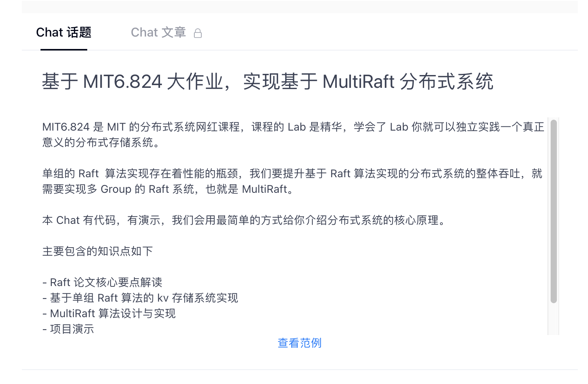

分布式事务初探
事务介绍
ACID
两阶段提交
我们后续会将更新发不到 gitbook 上，整理这本书耗费了我们大量的时间和精力。故上述章节尚未开放，一瓶矿泉水的价格支持我们继续输出优质的分布式存储知识体系，2.99¥，感谢大家的支持。

见我们 gitbook eraft 主页 https://gitbook.cn/gitchat/author/5d7fad728aef5b7c8fd126a3
文章审核通过之后我们会发布我们的主页，欢迎大家订阅。
我们后续会将更新发不到 gitbook 上，整理这本书耗费了我们大量的时间和精力。故上述章节尚未开放，一瓶矿泉水的价格支持我们继续输出优质的分布式存储知识体系，2.99¥，感谢大家的支持。

见我们 gitbook eraft 主页 https://gitbook.cn/gitchat/author/5d7fad728aef5b7c8fd126a3
文章审核通过之后我们会发布我们的主页，欢迎大家订阅。